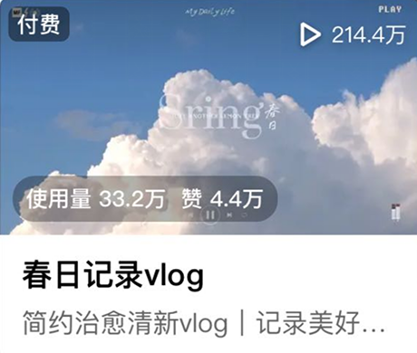
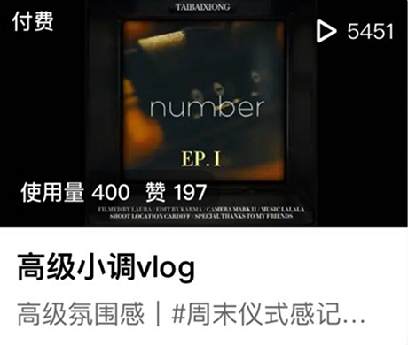
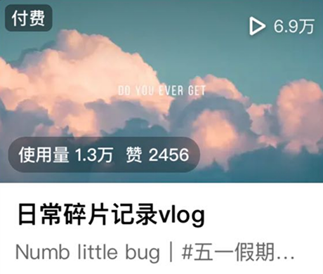
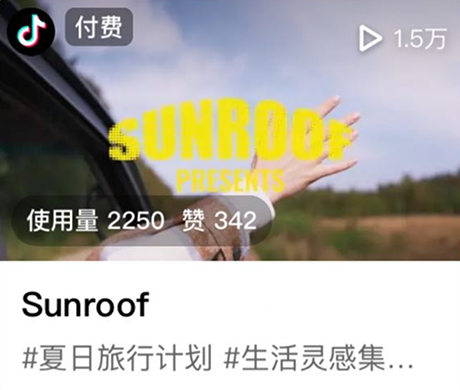
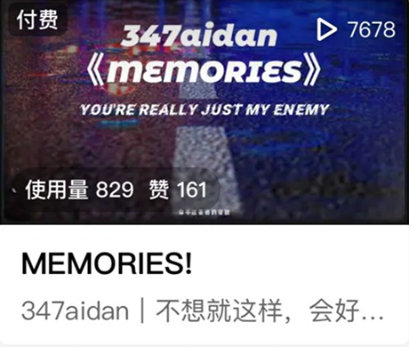
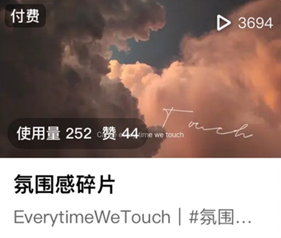

LITAILONG THINK, DESIGN
動画





テンプレート制作
ORIGINAL個人アカウントの動画運用において、3か月で最大210万回再生の実績を達成しました。企画立案、構成設計、編集、テンプレート選定まで一貫して行い、再生数を伸ばすための改善を継続しています。有料テンプレートも取り入れることで、一般的な無料テンプレートを使用した動画との差別化を図り、完成度の高いコンテンツ制作を意識しています。編集ツールにはCapCutを使用しています。
Tool